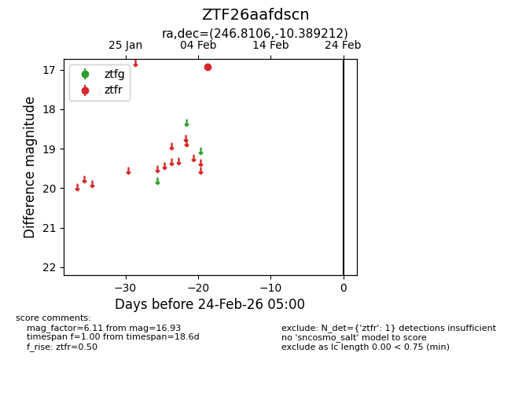
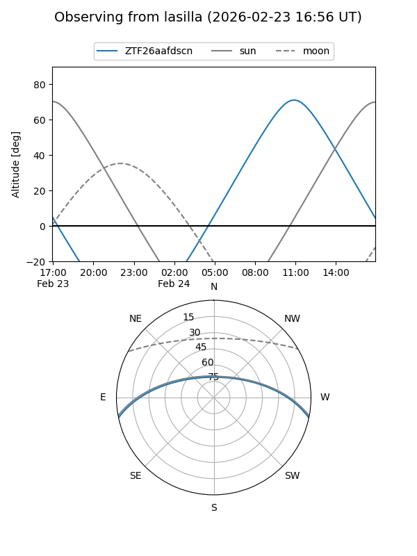
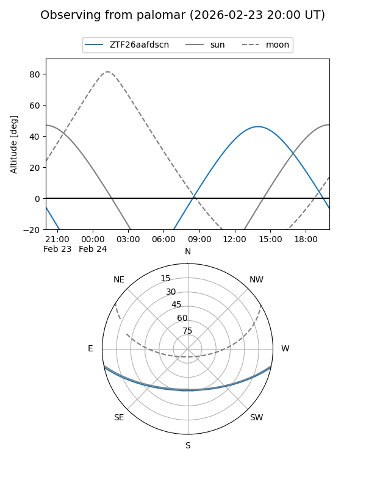

ZTF26aafdscn
Target ZTF26aafdscn at 2026-02-24 09:08
Aliases and brokers:
FINK: link
Lasair: link
ALeRCE: link
alt names
ZTF26aafdscn (ztf,fink_ztf)
Coordinates:
equatorial (ra, dec) = 246.8106,-10.38921
equatorial (HMS+DMS) = 16:27:14.54,-10:23:21.16
galactic (l, b) = (4.8430,+25.65304)
Flags:
Photometry:
last ztfr=16.93
1 ztfr detections
Lightcurve

Visibility


Additional plots